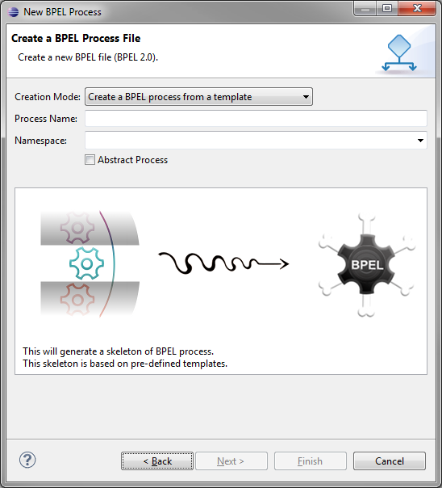
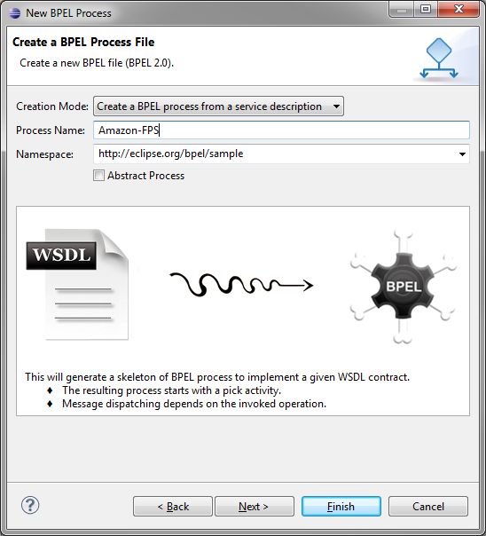
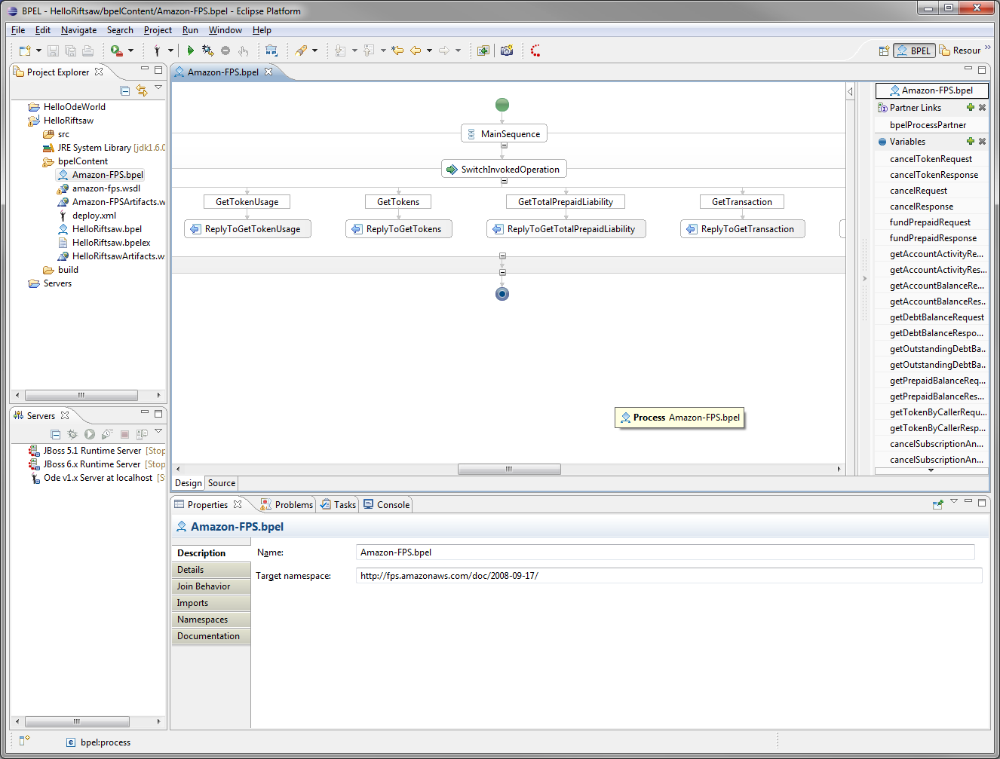
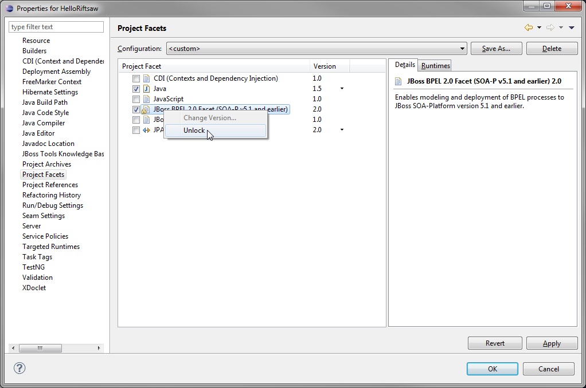
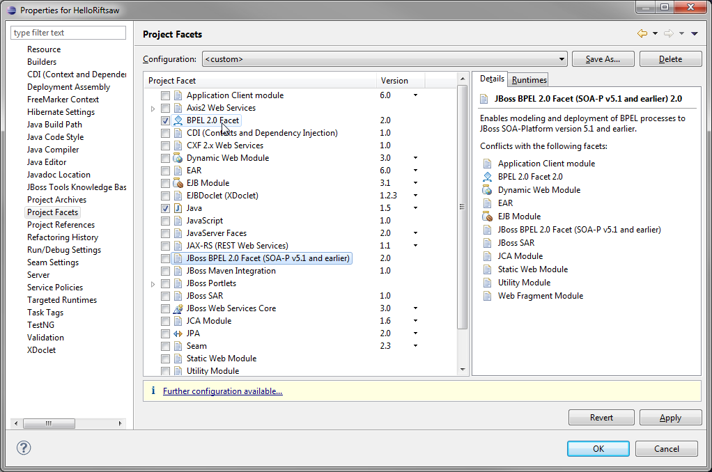
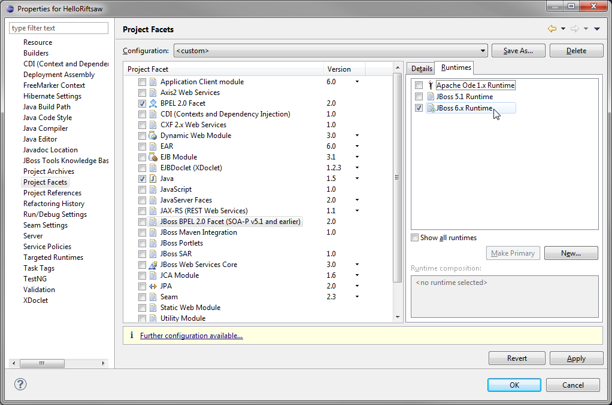

General
-
JBIDE-10010 Null Pointer Exception in BPEL Preferences page for WSIL Browser
JBIDE-10495 Document the migration procedure of BPEL projects from earlier releases of JBoss Developer Studio and SOA-P (see below)
JBIDE-11536 Unable to create new server runtime in "New BPEL Project" wizard
Bugzilla-379547 Null Pointer Exception in Namespaces tab
Bugzilla-379613 Automatic redeployment after a file is changed, does not work
Bugzilla-377556 Add support for <documentation> element
The BPEL Designer project at eclipse.org has graduated from the incubation phase and is now at version 1.0!
See the project home page for more information.
User Manual and Reference Guide for the BPEL Designer, as well as "Cheat Sheets" are now available from the Eclipse Help menu.
User Interface Changes
The first page of the wizard still allows creation of BPEL Process files from existing templates, as before:
Or you can create a BPEL Process from a service description WSDL file, as shown here:
WSDL files can be imported from the workspace or a file system share. The wizard will load the WSDL and display the service contract (port types).

The generated BPEL Process will now contain a skeleton for all of the Port Types and Operations:
Project Facet Migration
First, verify if your project is using the old JBoss Tools Facet ID. From the Project Properties page, select "Project Facets". If the current Facet is labeled "JBoss BPEL 2.0 Facet (SOA-P v5.1 and earlier)" you need to change it to the newer Facet if you intend to deploy this process to the latest version of Riftsaw. Right-click on the "JBoss BPEL 2.0 Facet" and click "Unlock" as shown here:
Un-check the JBoss BPEL 2.0 Facet and check the BPEL 2.0 Facet as shown here::
Finally, you may want to configure and select your new target runtime for the project. Click "OK" to save these changes. The project is now configured for deployment to the Riftsaw engine hosted on JBoss AS 6.x and later versions.
